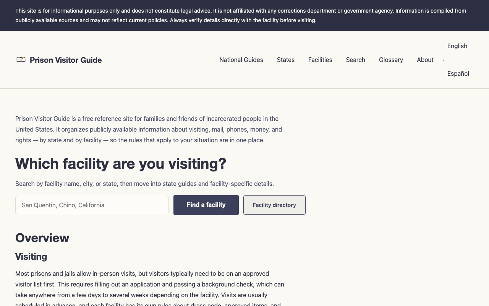

Prison Visitor Guide
a free guide for families visiting someone in prison
what it is
A free reference site for families and friends of incarcerated people in the United States. It gathers the rules about visiting, mail, phones, and money — by state and by facility — and explains them in plain language, in English and Spanish.
the problem
The information families need before a visit exists, but it's scattered across bureaucratic PDFs, outdated agency pages, and old forum posts — and written like legal filings. A first visit is stressful enough without guessing whether your outfit will get you turned away at the door, or whether you filled out the approval form the right way. Clear information is a small kindness that's strangely hard to find.
how it works
Search the facility you're visiting, or start from your state. Read the guide before you go: how to get on the approved visitor list, what to wear, what you can bring, how the day usually goes. Everything is compiled from public sources and written to be understood the first time.
see it
prisonvisitorguide.org — live, free, no ads.
